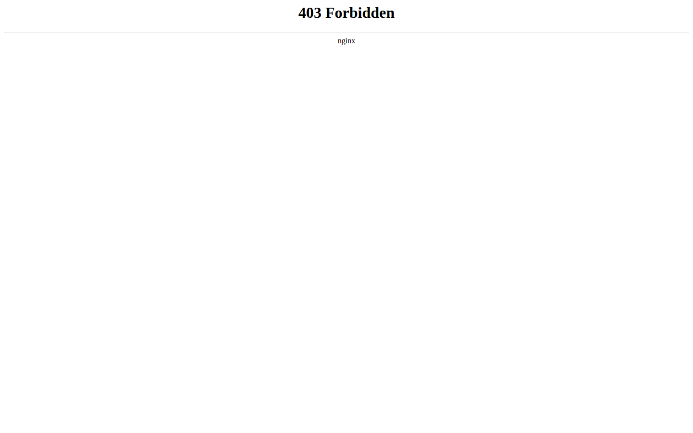
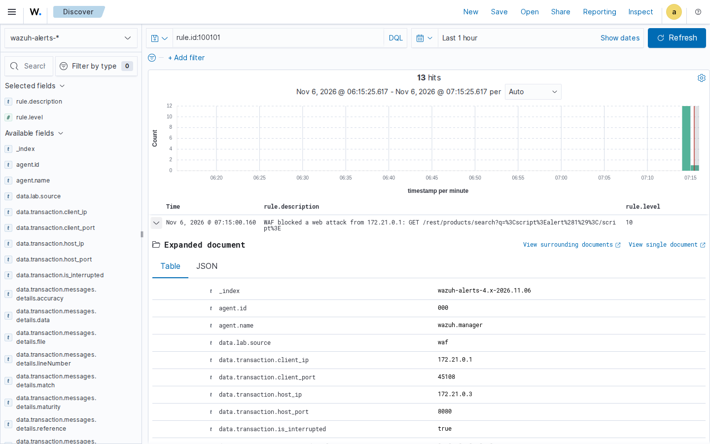
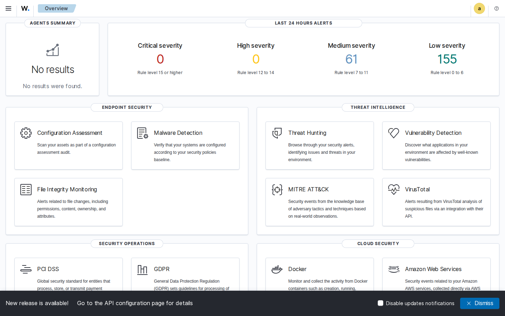

I built a small practice online shop and protected it the way a real company would: a guard at the door, a watcher on the network, and a control room that collects every alarm. Then I attacked it. Every attack was stopped, and the control room raised the alarm within seconds.
These numbers come from an automatic test that ran on GitHub (test 42179344856). Everything is practice data, and the attacks only hit the lab itself.
Checks every visitor's request and turns away anything that looks like an attack, before it reaches the shop.
Web application firewall
Quietly watches all the traffic and raises its own alarm when it recognises an attack, as a second line of defence.
Intrusion detection
Collects the alarms from the guard and the watcher in one place, so a security team sees what happened straight away.
SIEM
The zones are separate networks, so a zone firewall, single sign-on with MFA and automated response can be added later without rebuilding anything.
Firewall rules that fired: 920350, 920440, 930130, 941100, 941110, 941120, 941160, 941170, 941210, 941390, 942100, 942190, 942270, 942360. Machine-readable results: cybersentien_export.json.
Each result from the lab is turned into a line of evidence that CyberSentien can read: what was checked, whether it passed, and what proves it.
Lab services runninglab_containers_running | met | All 6 lab containers are running (run 42179344856). containers juiceshop=000aec64d431, log-init=1a8916285d26, suricata=b1cb8071eb51, waf=a3d8d3a4d187, wazuh.dashboard=6d81204e9a06, wazuh.index |
Legitimate traffic allowedwaf_allows_legitimate_traffic | met | A normal product search returned HTTP 200 (run 42179344856). container waf=a3d8d3a4d187 |
Web attacks blockedwaf_blocks_web_attacks | met | The WAF returned 403 for all 12 attacks (run 42179344856). OWASP CRS rules 920350, 920440, 930130, 941100, 941110, 941120, 941160, 941170, 941210, 941390, 942100, 942190, 942270, 942360 |
Firewall alerts reach the SIEMsiem_receives_waf_alerts | met | Wazuh holds 12 WAF block alerts (rule 100101) (run 42179344856). Wazuh rule 100101, alert eYy1r6EBzW1f4UzlMCmo |
Intrusion detection alerts reach the SIEMids_detects_attacks_in_siem | met | Wazuh holds 12 Suricata alerts (run 42179344856). Suricata sid 9000001, Wazuh rule 86601, alert hoy1r6EBzW1f4UzlMCmo |
SIEM dashboard availablesiem_dashboard_available | met | The Wazuh dashboard login page returned HTTP 200 (run 42179344856). container wazuh.dashboard=6d81204e9a06 |
Time to detecttime_to_detect | collected | The first WAF alert was searchable in Wazuh 6 s and the first Suricata alert 6 s after the first attack (run 42179344856). Wazuh rule 100101; Suricata sid 9000001, Wazuh rule 86601, alert hoy1r6EBzW1f4UzlMCmo |
From test 42179344856. Sending these lines into CyberSentien automatically is the next step and is not live yet.



git clone https://github.com/cybersentien-ops5/security-lab.gitdemo folder, double-click start-demo.command, then attack-demo.command.check-demo.command prints PASS or FAIL for each part; stop-demo.command frees the memory.Pinned versions: Wazuh 4.9.2 · OWASP ModSecurity CRS 4.25.2 · OWASP Juice Shop 17.1.1 · Suricata 7.0.17. Source code and every test run: github.com/cybersentien-ops5/security-lab.